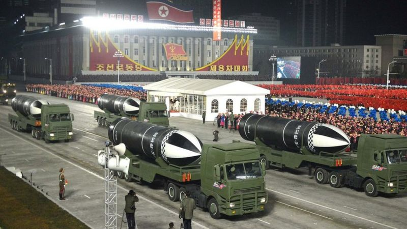
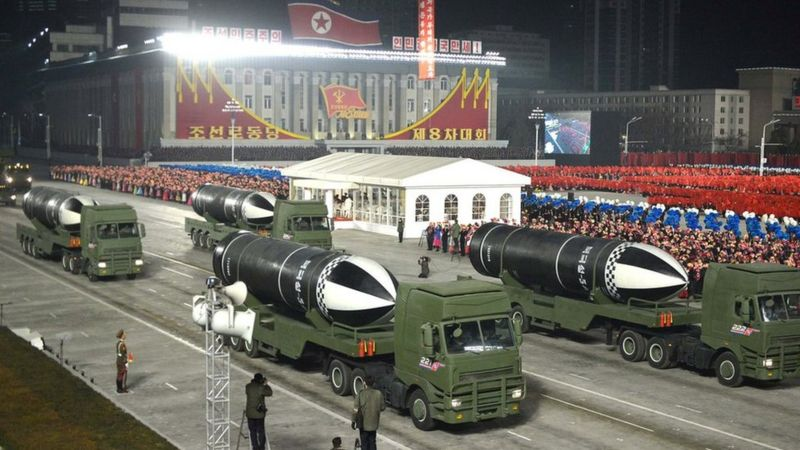

Categoria:
InternacionalTitulo:
Nuevos Misiles de la Dictadura NorCoreanaHistoria:
Corea del Norte ha presentado un nuevo tipo de misil balístico que se lanza desde submarinos, descrito por los medios estatales como "el arma más poderosa del mundo". Varios de estos misiles fueron exhibidos en un desfile supervisado por el líder Kim Jong-un, informaron los medios estatales. La demostración de fuerza militar se produce días antes de la toma de posesión de Joe Biden como presidente de Estados Unidos. También sigue a una rara reunión política en la que Kim condenó a Estados Unidos como el "mayor enemigo" de su país. Las imágenes publicadas por los medios estatales de Corea del Norte mostraron al menos cuatro grandes misiles pintados en blanco y negro que pasaban frente a una multitud que ondeaba banderas.Autor:
Gonzalo Gonzalesfecha:
15/1/2021Ubicacion:
Corea del Norte 
